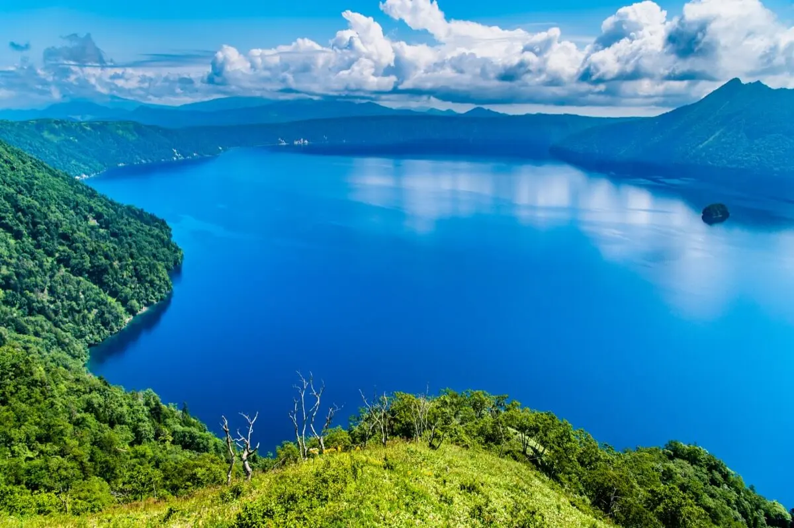
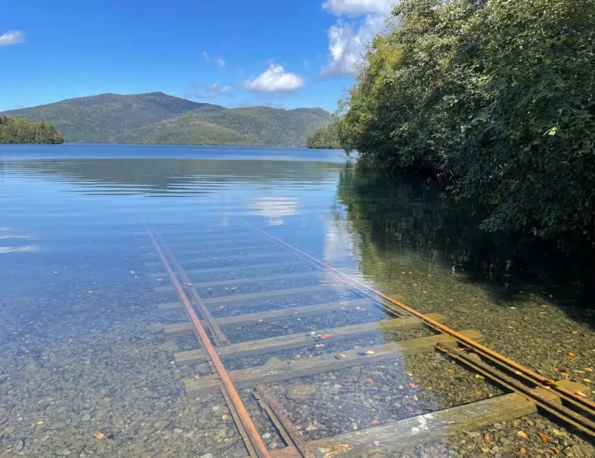
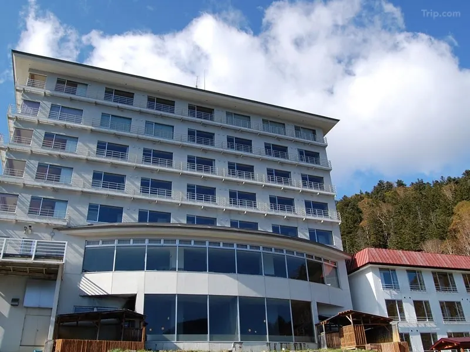
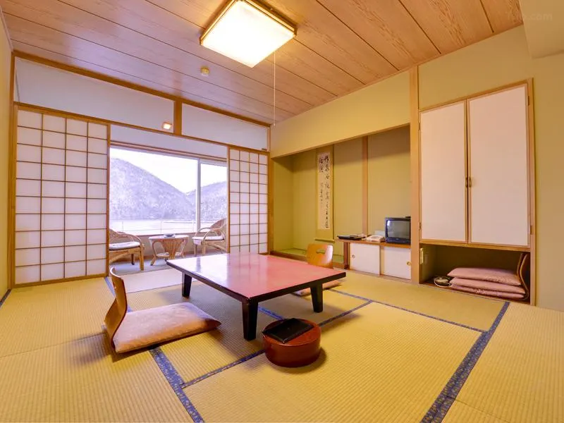
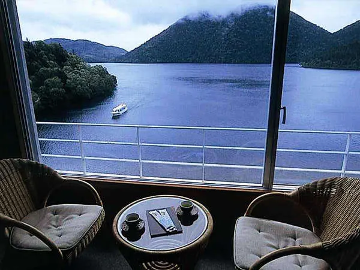
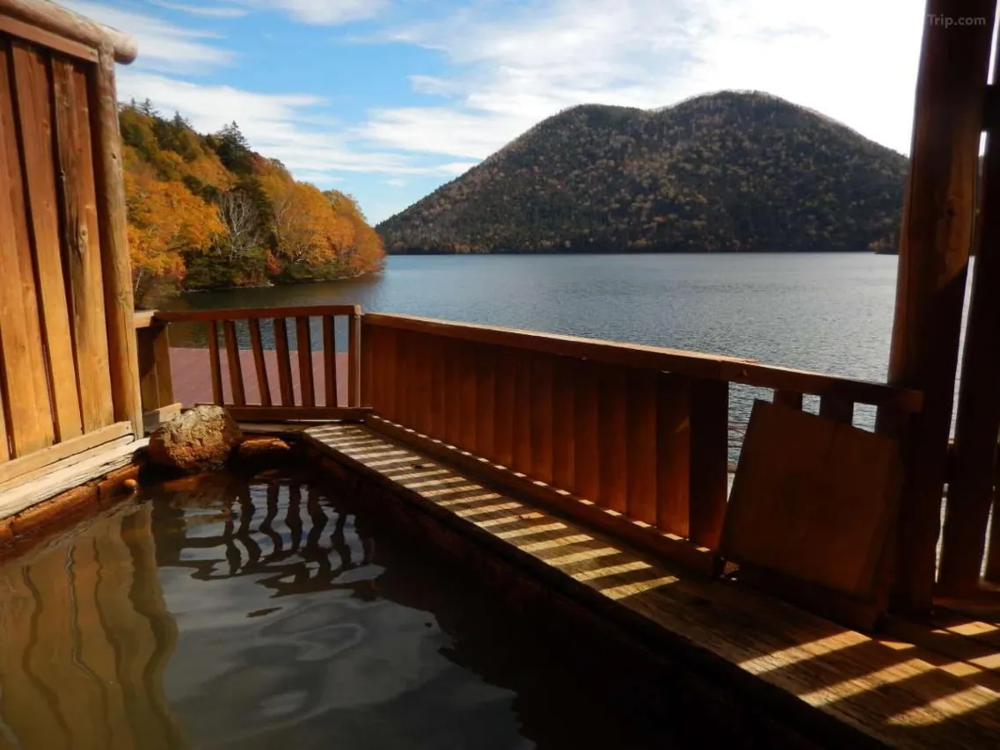
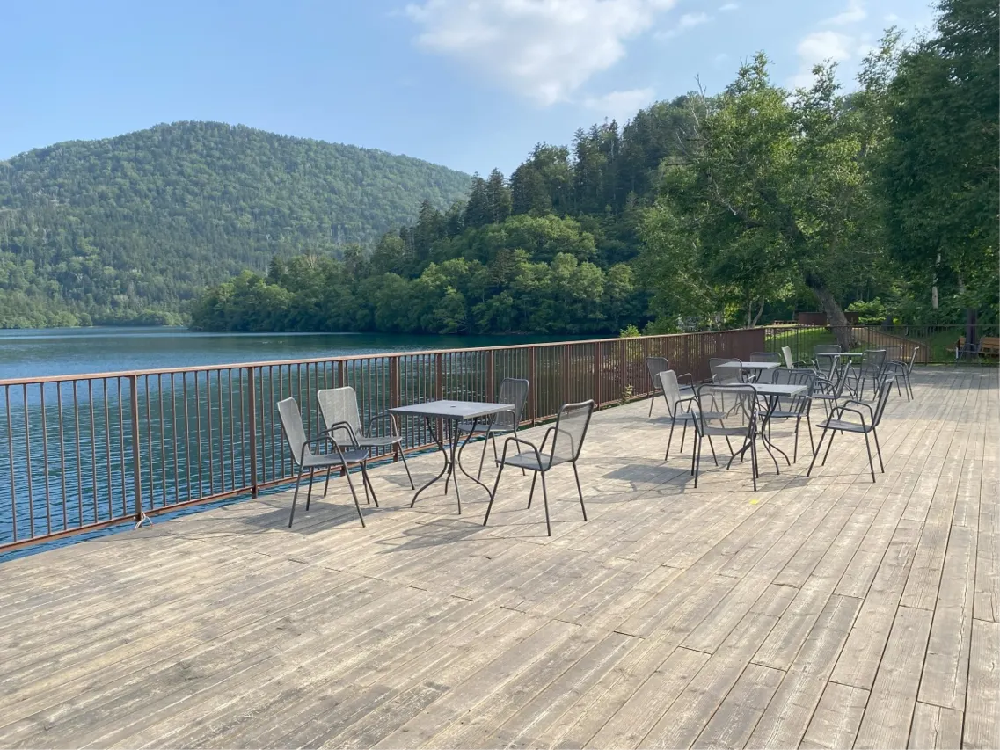
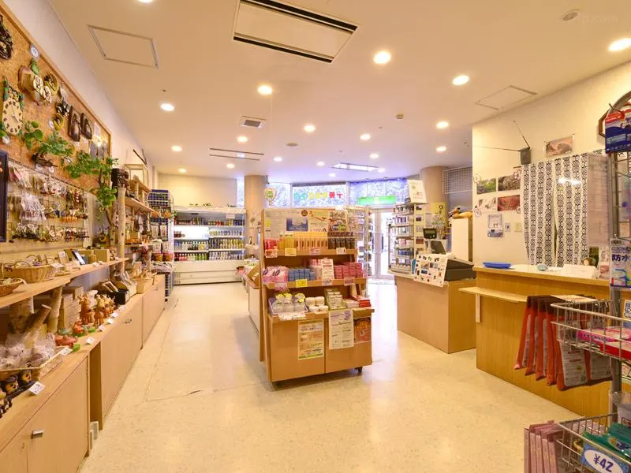

There is a moment every guest at Hotel Fusui eventually has — standing at their room window before the rest of the building wakes, or at the edge of the open-air bath at dusk — when the lake's surface settles into total stillness. The surrounding mountains of the Daisetsuzan reflect in the water with the kind of precision that makes you question which version of the landscape is real. Somewhere near the shore, a set of railway tracks descends gently into the lake and disappears into the transparent bottom. If you have seen Spirited Away, you do not need anyone to point out what this looks like.
Hotel Fusui is the last hotel standing on the western shore of Lake Shikaribetsu. The second property that once shared this position closed several years ago, and the national park designation that surrounds the lake prevents any new construction. There is no competitor, no alternative on the lakeshore, no other building between the hotel and the water. What exists here is singular: a 46-room Japanese onsen ryokan at an elevation of 810 meters in Hokkaido's interior, on the shores of the highest-altitude lake in the prefecture, whose submerged railway tracks have become one of the most photographed Spirited Away visual references in the country.
The Lake and What It Does in Each Season

Lake Shikaribetsu was formed approximately 30,000 years ago when volcanic activity blocked a river and created a natural basin. It sits at 810 meters elevation — the highest lake in Hokkaido — in a valley enclosed by the mountains of Daisetsuzan National Park. Its water clarity is among the highest recorded for any lake in Japan: on clear, calm days, the lakebed is visible to a depth that produces a disorienting sense of depth from the surface. The mountains of the east bank, anchored by the twin-peaked Mt. Tenbo ("Lip Mountain"), reflect in the water so precisely that the lake appears to have its own interior sky.
Each season changes the lake's character entirely. In spring, the snowmelt brings the first canoeing and the forest around the shore blooms with fresh green. Summer brings full foliage and the best conditions for the submerged tracks to be photographed — the water is clearest in late spring through autumn when sunlight reaches the lakebed at optimal angles. Autumn turns the surrounding forest through amber and red, with the reflection doubling the effect. Winter is the most dramatic transformation: the lake freezes completely, and on the ice surface the annual Shikaribetsu Kotan is constructed — a temporary village of igloos, an ice bar, an ice chapel where actual weddings take place, and the open-air hot spring bath built directly on the frozen lake, operating at temperatures that differ from the surrounding air by over 60 degrees Celsius. Guests at Hotel Fusui during the Kotan period (typically late January to late March) can walk from the hotel directly onto the lake.
The Submerged Tracks: What You Are Actually Looking At

The railway tracks at Lake Shikaribetsu are functional infrastructure, not a ruin or an art installation. They are used each autumn to haul the lake's pleasure boats up the shore before the surface freezes, preventing damage during the ice season. When the boats are in the water and no hauling is needed, the tracks simply sit there — entering the lake from the shore at a gentle angle, descending into the shallows, and continuing toward the lakebed. In calm conditions with good light, they are clearly visible to a depth that makes the image read not as submerged infrastructure but as a railway that has chosen to continue into the water rather than stop at the shore.
The Spirited Away comparison has circulated on Japanese social media and travel platforms for years. The official Hokkaido tourism authority describes the sight as resembling "a path continuing to another world." The Anime Locations pilgrimage database has categorized the tracks as a Spirited Away location explicitly. Photographs taken here — particularly with a figure standing at the water's edge looking toward the descending rails, in the manner of Chihiro waiting for the train — have been shared across platforms accompanied by direct references to the film. The best light for photography is from late morning to early afternoon in late May through October, when the water is free of ice and the sun is high enough to illuminate the lakebed through the surface. The tracks are a short walk from Hotel Fusui's entrance.
The Rooms: 46 Windows onto One Lake
All 46 rooms at Hotel Fusui face the lake. This is not a marketing claim that requires qualification — the hotel is positioned on the shore such that there is no configuration in which a room does not look at the water. The choice is between the three-story main wing and the eight-story annex, with the annex offering higher elevations and correspondingly broader views across the Daisetsuzan panorama. Both wings offer traditional Japanese-style tatami rooms; the annex additionally has hybrid rooms with both tatami areas and Western-style beds. The top-floor "special room" in the annex is a corner unit with glass windows on two sides, providing a 180-degree view of the lake and mountains, a private rock garden entrance through a sliding Japanese door, and in-room dining for both dinner and breakfast. Standard plan rooms are on the fourth to eighth floors of the annex or the equivalent levels in the main wing.
A detail worth noting: at check-in, the front desk brings out a small flag corresponding to the guest's nationality. It is a minor thing, but it signals an attentiveness to international guests that the hotel's otherwise limited English-language infrastructure might not otherwise communicate. One reviewer who received a complimentary ride to Shintoku at checkout — to make the connecting bus — described this as characteristic of the staff's approach: practical, quiet, anticipatory. The hotel is not organized around international hospitality frameworks. It is organized around Japanese hospitality frameworks, which is a different and arguably superior thing, applied consistently.
The Onsen: Iron Spring, Open Air, Ice
Hotel Fusui's hot spring is a sodium-calcium iron bicarbonate spring whose water is bluish and slightly opaque when fresh from the source, turning brown and cloudier as it oxidizes on contact with air. This color shift — from blue-grey to amber-brown — is a marker of genuine iron content and one of the more visually distinctive characteristics a hot spring can have. The outdoor bath extends to the lake edge: guests in the rotenburo are separated from the water of Lake Shikaribetsu by only the bath rim, and the visual at dusk — steam rising across the lake surface, the mountain profiles going dark in sequence — is the kind of onsen experience that Hokkaido's interior makes possible and nowhere else quite replicates.
During the Kotan winter festival, a separate open-air onsen is constructed on the frozen lake itself, built entirely of ice and snow that melt each spring. This bath — operated at the ice village with mixed bathing and women-only hours at specified intervals — is an experience specific enough to this location and this season that it constitutes a reason to visit in winter independent of any other consideration. Soaking in iron-rich hot water while sitting on a surface that is frozen solid at minus twenty degrees below, surrounded by an ice village built by hand, is not something that can be experienced anywhere else on earth.
The Cuisine: Tokachi on the Table
Dinner at Hotel Fusui is kaiseki, served in the Lake View restaurant overlooking the water, with an option for in-room dining in the premium plans. The menu draws from the Tokachi region's considerable larder: Dolly Varden trout from the mountain rivers, Shikaoi pork teppanyaki, Hokkaido salmon and scallop seafood hotpot, red king crab (in season), and mountain vegetables from the surrounding forest. The Tokachi region is one of Hokkaido's primary agricultural zones — potatoes, dairy, grain, beet sugar — and the hotel's kitchen uses that proximity to work with ingredients that are genuinely local rather than nominally so. Breakfast is a buffet of Japanese and Western dishes in the same lake-view restaurant; the inclusion of the hotel's own Kinkiyu special curry and a clay pot pudding are items that guests consistently mention in reviews as unexpected and correct additions to a morning meal.
Practical Information
- Check-in: 15:00–19:00 Check-out: 10:00
- Meals: Dinner (kaiseki, last seating 19:30) and buffet breakfast included in most plans · In-room dining available in premium plans
- Baths: Indoor hot spring, outdoor rotenburo (lake-edge) · Iron-rich sodium-calcium bicarbonate spring · Tattoo policy applies to public baths
- Kotan Ice Festival: Late January–late March (varies by year) · Ice village, open-air bath on frozen lake, ice bar · Free drink at ice bar included in some room plans
- By car from Obihiro: ~1h 40min (Route 241 to Shikaoi, then Route 136 to lake) · Free parking on-site
- By bus from Obihiro Station: Takushoku Bus 51 to Shikaribetsu-kohan-onsen (~1h 40min) · Hotel is at the terminus
- Shuttle: Hotel provides complimentary rides to Shintoku Station for guests needing onward bus connections — confirm at check-in
- Best seasons: Winter (Kotan festival, Jan–Mar) · Autumn foliage (Oct–Nov) · Late spring for submerged tracks photography (May–Jun)
- Language: Limited English; staff are consistently described as accommodating to international guests
Getting There: The Road Into the Mountains
Lake Shikaribetsu has no train station. The closest rail connection is JR Shintoku Station or JR Obihiro Station, both of which require either a bus or a car to complete the journey. By car from Obihiro — the most practical access point — the drive takes approximately one hour and forty minutes via Route 241 to Shikaoi and then Route 136 to the lake, climbing steadily through Tokachi farmland and then into forested mountain terrain as the elevation rises toward 810 meters. By bus, the Takushoku Bus 51 from Obihiro Station runs to Shikaribetsu-kohan-onsen in approximately the same time. The hotel sits at the terminus; there is nowhere further to go on this road.
The journey from Sapporo takes approximately three hours by car via the Doto Expressway to Tokachi-Shimizu IC, then Route 273 or the mountain roads south. From New Chitose Airport, allow around three hours as well, routing through Obihiro. For guests without a car, the combination of train to Obihiro and bus to the lake is manageable but requires careful timetable planning — the bus runs roughly twice daily in each direction, and the connections are not forgiving of delays. The hotel's complimentary shuttle to Shintoku at checkout is worth requesting in advance if you need a specific bus or train connection out.
Why This Lake Is Different
Hotel Fusui is not a building that would distinguish itself through its architecture or its amenities in any city context. It is an aging property in a national park that cannot be rebuilt, maintained with evident care but not significantly renovated. What it has — and what cannot be replicated by any facility elsewhere — is its position. There is one lake. There is one onsen hotel on it. The submerged tracks are a few minutes' walk from the entrance. The reflection of Daisetsuzan in the still water is visible from every room. The Kotan ice village assembles each winter on the surface the hotel looks out at.
Spirited Away was built from real places — from buildings Miyazaki measured, from springs he soaked in, from train stations he waited at, from festivals he witnessed. The sea train sequence came from somewhere, and whether the specific inspiration was Lake Shikaribetsu or the Shimonada coast or both, what the film captured was the quality of a railway that operates in a world where the boundary between water and land is not fixed — where a train can continue into water because that is simply where it goes. Lake Shikaribetsu has that quality. The tracks descend from the shore into the transparent lake, visible to the bottom, continuing toward an arrival that the visible world cannot account for. You stand at the water's edge and understand, without the film needing to be open on your phone, why this place has been compared to it for years.
| Full Name | 然別湖畔温泉ホテル風水 (Shikaribetsu Kohan Onsen Hotel Fusui) |
| Address | Shikaribetsukohan, Shikaoi-cho, Kato-gun, Hokkaido |
| Anime Connection | Spirited Away — Lake Shikaribetsu's submerged railway tracks are widely cited as a visual reference for the film's sea train sequence; the hotel is the lake's only onsen accommodation |
| Rooms | 46 rooms — all lake-facing · Tatami and hybrid tatami/Western options · 3-storey main wing and 8-storey annex · Top-floor special room with 180° lake view |
| Hot Spring | Iron-rich sodium-calcium bicarbonate spring · Indoor + open-air rotenburo at lake edge · Ice-surface open-air bath during Kotan festival (Jan–Mar) |
| Cuisine | Kaiseki dinner (Tokachi region) · Buffet breakfast · Lake View restaurant · In-room dining available in premium plans |
| Nearest Access | Obihiro Station — Takushoku Bus 51 to Shikaribetsu-kohan-onsen (~1h 40min) · Hotel at bus terminus · Complimentary shuttle to Shintoku on request |
| Best Season | Winter for Kotan ice village (Jan–Mar) · Autumn for foliage · Late spring for submerged tracks photography |
Photo Gallery

Photo 1
Photo 2
Photo 3'">
Photo 4'">
Photo 5'">
Photo 6'">The Only Hotel on the Lake
There is one hotel on the shore of Lake Shikaribetsu. Check availability before the Kotan season fills.
Lake Shikaribetsu is location 07 in our complete Spirited Away pilgrimage guide: Through the Tunnel — Every Real-Life Spirited Away Location in Japan →
Staying in Nukabira Onsen nearby? Read our article on Sankosou — an irori ryokan a short drive from the lake with its own private-source cave bath: Sankosou: The Irori Ryokan at the Edge of the Spirited Away Landscape →
← Back to Stay